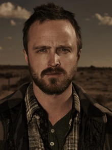

Biografía
Walter Hartwell White, interpretado por Bryan Cranston, es el protagonista de la aclamada serie de televisión Breaking Bad. Al comienzo de la serie, Walter es un profesor de química de secundaria en Albuquerque, Nuevo México, con una vida modesta y predecible. Está casado con Skyler White, con quien tiene un hijo adolescente, Walter Jr., que padece parálisis cerebral, y una hija en camino, Holly.
La vida de Walter da un giro drástico cuando, al día siguiente de cumplir 50 años, es diagnosticado con un cáncer de pulmón inoperable en etapa III. Ante la perspectiva de dejar a su familia con una enorme deuda médica y sin seguridad financiera, toma la desesperada decisión de utilizar sus conocimientos en química para producir y vender metanfetamina de alta pureza.

La Transformación en Heisenberg
Para operar en el mundo criminal sin revelar su identidad, Walter adopta el alias de "Heisenberg". Este alter ego representa su faceta más oscura, calculadora y despiadada. A medida que la serie avanza, la personalidad de Heisenberg comienza a dominar a la del tímido profesor de química, llevándolo por un camino de violencia, poder y decadencia moral.
Lo que comenzó como una medida desesperada para mantener a su familia se convierte en una búsqueda de poder y reconocimiento. Walter se enorgullece de la calidad de su producto y de construir un "imperio", admitiendo finalmente que continuó en el negocio no solo por su familia, sino porque le hacía sentir vivo y poderoso.
Momentos Clave en su Evolución
- Decisión inicial: Asociarse con su ex-alumno, Jesse Pinkman, para "cocinar" metanfetamina.
- La muerte de Krazy-8: Su primer asesinato, que lo marca profundamente.
- El altercado con Tuco Salamanca: Su primer encuentro violento con un capo de la droga, donde usa fulminato de mercurio para intimidarlo.
- "I am the one who knocks": La famosa frase a Skyler que simboliza su total aceptación de su nuevo rol como una figura de poder.
- La muerte de Gus Fring: Un elaborado plan para eliminar a su mayor rival y consolidarse como el capo principal.
- La confesión a Jesse: Revela su papel en la muerte de la novia de Jesse, Jane, marcando un punto de no retorno en su relación.
- Caída y exilio: La revelación de sus actividades a su cuñado Hank Schrader, lo que lleva a la destrucción de su familia y su imperio.
Relaciones Principales
Las relaciones de Walter White son complejas y se deterioran a medida que su alter ego, Heisenberg, toma el control.
| Personaje | Relación | Estado de la Relación al Final |
|---|---|---|
| Jesse Pinkman | Ex-alumno y socio en el negocio de la metanfetamina. | Conflictiva y rota. Walter finalmente libera a Jesse del cautiverio, pero la relación está destruida por la manipulación y el dolor. |
| Skyler White | Esposa. | Separados y profundamente fracturada. Skyler conoce la verdad y siente temor y resentimiento hacia él. |
| Hank Schrader | Cuñado y agente de la DEA. | Antagónica. Hank descubre la verdad sobre Walter, lo que lleva a una confrontación fatal. |
| Gustavo "Gus" Fring | Empleador, distribuidor de droga y principal antagonista. | Enemigos mortales. Walter logra asesinar a Gus en una elaborada trampa. |
| Saul Goodman | Abogado. | Una relación profesional basada en la necesidad mutua que termina cuando el imperio de Walt se derrumba. |

Más Información
Para aprender más sobre Walter White y el universo de Breaking Bad, puedes visitar los siguientes enlaces: